변리사-1차(3교시) (2020-05-30 기출문제)
1. 그림은 도르래에 한 줄로 연결된 질량이 각각 1kg, 2kg 인 물체 A, B가 힘 F에 의해 정지해 있는 모습을 나타낸 것이다. F를 없앴더니 두 물체가 4m/s2 가속력을 가지고 A는 오른쪽으로, B는 연직 아래로 각각 0.1m 이동하였다. 0.1m 이동하는 동안 A에 작용되는 마찰력이 한 일(J)의 절댓값은? (단, 중력가속도 g는 10m/s2이고, 공기 저항, 도르래의 회전 마찰력과 질량, 줄의 질량은 무시한다.)
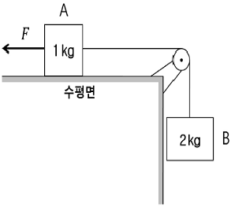
- 0.6
- 0.8
- 1.0
- 1.2
- 1.4
(정답률: 알수없음)

2. 질량이 각각 60kg, 90kg인 갑과 을이 마찰이 없는 평면 위에 정지해 있다. 갑은 x축의 원점에 있고, 을은 x=+10m 지점에 있다. 갑과 을은 줄의 양끝을 잡고 있다가, 어느 순간 줄을 마주잡고 끌어당겨서 갑과 을이 가까워지고 있다. 다음 물음에 답하시오. (단, 공기 저항과 줄의 질량은 무시하고, 줄의 길이는 늘어나지 않는다.)
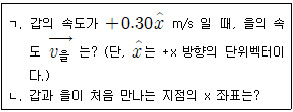
- ㄱ:
 [m/s], ㄴ: +6.0 [m]
[m/s], ㄴ: +6.0 [m] - ㄱ:
 [m/s], ㄴ: +8.0 [m]
[m/s], ㄴ: +8.0 [m] - ㄱ:
 [m/s], ㄴ: +6.0 [m]
[m/s], ㄴ: +6.0 [m] - ㄱ:
 [m/s], ㄴ: +8.0 [m]
[m/s], ㄴ: +8.0 [m] - ㄱ:
 [m/s], ㄴ: +8.0 [m]
[m/s], ㄴ: +8.0 [m]
(정답률: 알수없음)
3. 길이가 l이고 질량이 m인 균일한 사다리가, 바닥면과 θ의 각도를 이루며 마찰이 없는 벽면에 기대어 있다. 질량 M인 남자는 사다리의 질량 중심에 서 있다. 사다리와 바닥면 사이의 최대 정지마찰계수는 μs이다. 사다리가 미끄러지지 않기 위한 최소 각도를 θmin라고 할 때 tanθmin 은?
- 1/2μs
- μs/2
- 2/3μs
- μsm/2(M+m)
- M/2μs(M+m)
(정답률: 알수없음)
4. 그림의 회로에서 스위치 S1과 스위치 S2를 동시에 닫은 순간에 충전되지 않은 축전기 C를 지나는 전류는 Ii 이다. 또한 S1과 S2를 닫은 후 충분히 오랜 시간이 흘렀을 때, 코일 L을 지나는 전류는 If에 가까워진다. 이때 If/Ii로 옳은 것은?
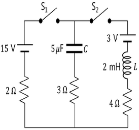
- 0
- 2/3
- 1
- 3/2
- ∞
(정답률: 알수없음)
5. 그림과 같이 반지름이 각각 2r, r인 원형 도선 A, B가 원점 O를 중심으로 같은 평면에 고정되어 있다. A, B에 흐르는 일정한 전류의 세기는 각각 IA, IB이고, O에서 A와 B에 의한 자기장의 세기는 0이다. 이에 관한 설명으로 옳은 것만을 ＜보기＞에서 있는 대로 고른 것은? (단, 도선의 두께는 무시한다.)
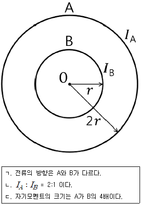
- ㄱ
- ㄷ
- ㄱ, ㄴ
- ㄴ, ㄷ
- ㄱ, ㄴ, ㄷ
(정답률: 알수없음)
6. 잔잔한 수면 위에서 퍼져나가는 어떤 물결파의 경우, 높이 변화 y는 위치 x와 시간 t의 함수로 다음과 같이 표시된다. y(x,t)= 0.10sin (3x- 4t) [m]. 이 식에서 x의 단위는 미터 [m]이고, t의 단위는 초 [s]이다. 이 물결파의 파장(λ)과 속도(v)는?
- 2π/3 [m], 4/3 [m/s]
- 1/3 [m], 4/3 [m/s]
- 3 [m] , 12 [m/s]
- 3/2π [m], 3/4 [m/s]
- 3 [m], 3π/2 [m/s]
(정답률: 알수없음)
7. 그림과 같이 지면으로부터 나오는 방향의 균일한 자기장 영역 I, II에 가로, 세로의 길이가 각각 3l. l인 직사각형 모양의 도선이 고정되어 있다. 자기장 영역 I과 II에서 시간 t에 따라 변하는 자기장의 세기는 각각 2at, at+b이다. 도선에 유도되는 기전력의 크기는? (단, a, b는 상수이고, 도선의 두께는 무시한다.)
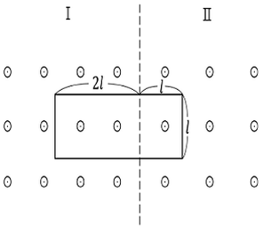
- al2
- 2al2
- 3al2
- 4al2
- 5al2
(정답률: 알수없음)
8. 그림은 1몰의 단원자 이상기체의 상태가 A→B→C→A로 변하는 순환과정에서의 압력 P와 부피 V를 나타낸 것이다. A→B 과정에서 기체가 흡수한 열량 QAB와 이 순환과정에서 기체가 외부에 한 총 일 W의 비 ｜W/QAB｜는?
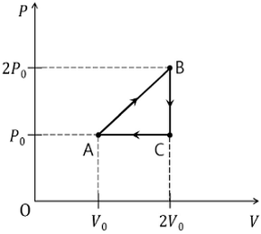
- 1/24
- 1/16
- 1/12
- 1/8
- 1/6
(정답률: 알수없음)
9. 어떤 레이저가 4.0×105W의 출력으로 1.0×10-7s 동안 빛 에너지를 방출한다. 레이저 파장이 500nm 일 때, 방출되는 총 광자 수(개)는? (단, 플랑크 상수는 6.6 × 10-34J⋅s 이고, 광속은 3.0 x 108m/s 이다.)
- 1.0 × 1016
- 5.0 × 1016
- 1.0 × 1017
- 5.0 × 1017
- 1.0 × 1018
(정답률: 알수없음)
10. 폭이 각각 L, 2L인 일차원 무한 퍼텐셜 우물에 전자 A, B가 각각 어떤 양자상태로 갇혀있다. A는 바닥상태에 있고, A와 B의 에너지는 같다. 이때 B의 드브로이 파장(λ)은?
- L/4
- L/2
- L
- 2L
- 4L
(정답률: 알수없음)
11. 다음은 원자 및 이온의 바닥상태 전자배치를 나타낸 것이다. 옳은 것만을 ＜보기＞에서 있는 대로 고른 것은?
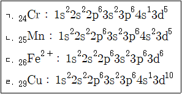
- ㄱ, ㄴ
- ㄱ, ㄷ
- ㄴ, ㄷ
- ㄱ, ㄴ, ㄷ
- ㄱ, ㄴ, ㄷ, ㄹ
(정답률: 알수없음)
12. 배위화합물 A는 [Co(en)2Cl2]C1이고, 배위화합물 B는 [Co(en)3]Cl3(en=ethylenediamine, H2NCH2CH2NH2)이다. 이에 관한 설명으로 옳은 것만을 ＜보기＞에서 있는 대로 고른 것은?
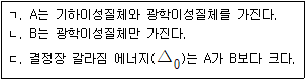
- ㄱ
- ㄷ
- ㄱ, ㄴ
- ㄴ, ㄷ
- ㄱ, ㄴ, ㄷ
(정답률: 알수없음)
13. 다음은 분자식이 C2H6O인 유기 화합물의 1H-NMR 스펙트럼을 나타낸 것이다. 스펙트럼 봉우리의 면적비는 A : B : C = 2 : 1 : 3 이다. 이 화합물과 스펙트럼의 설명으로 옳은 것만을 ＜보기＞에서 있는 대로 고른 것은?
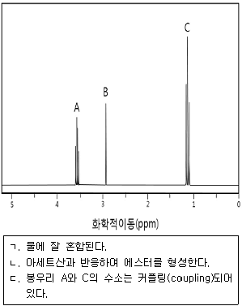
- ㄱ
- ㄱ, ㄴ
- ㄱ, ㄷ
- ㄴ, ㄷ
- ㄱ, ㄴ, ㄷ
(정답률: 알수없음)
14. 분자식이 C4H8인 탄화수소의 구조 이성질체에 관한 설명이다. 다음 설명으로 옳은 것만을 ＜보기＞에서 있는 대로 고른 것은?
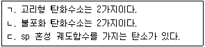
- ㄱ
- ㄴ
- ㄱ, ㄷ
- ㄴ, ㄷ
- ㄱ, ㄴ, ㄷ
(정답률: 알수없음)
15. 그림은 이핵 이원자 분자 XY의 바닥상태 분자 궤도함수를 나타낸 것이다. 바닥상태의 XY 화합물에 관한 설명으로 옳지 않은 것은?
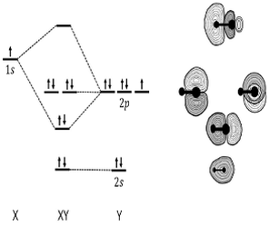
- XY 결합차수는 1이다.
- 반자성이다.
- 쌍극자 모멘트가 있다.
- 전기음성도는 X가 Y보다 작다.
- 최고 점유 분자 궤도함수(HOMO)는 반결합(antibonding) 분자 궤도함수이다.
(정답률: 알수없음)
16. 숟가락의 은(Ag) 전기도금에서 숟가락은 환원 전극으로, 순수 은(Ag) 조각은 산화 전극으로 작용한다. 이 둘을 시안화은 (AgCN) 용액 속에 담그고 9.65A의 전류를 흐르게 하여 표면적이 54cm2 인 숟가락의 표면을 40㎛의 평균 두께로 도금하였다. 전기도금 하는데 소요된 시간(초)은? (단, 은의 밀도는 10g/cm3 으로 가정하고 원자량은 108g/mol이다. 페러데이 상수는 F= 96500 C/mol, 1 ㎛ = 10-4 cm 이다.)
- 100
- 200
- 300
- 400
- 500
(정답률: 알수없음)
17. 다음은 탄소(C)와 CO2(g)가 반응하여 CO(g)를 생성하는 평형 반응식과 압력으로 정의되는 평형 상수이다. C(s) + CO2(g) ⇆ 2CO(g), Kp
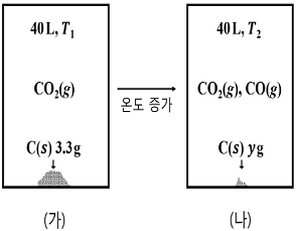
그림 (가)는 온도 T1에서 부피가 40L로 일정한 진공용기에 탄소 가루(C(s))와 CO2(g)를 넣은 반응 초기 상태를, (나)는 온도를 T2 로 올려 반응이 진행된 후 평형에 도달한 상태를 나타낸다. 표는 (가)와 (나)에서의 자료이다.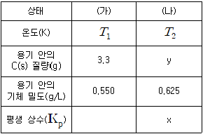
x/y는? (단, 모든 기체는 이상 기체와 같은 거동을 하고 RT2 = 84atm⋅L/mol로 주어진다. CO2의 분자량은 44g/mol이고 CO의 분자량은 28g/mol 이다. C(s)의 부피와 증기압은 무시한다.)- 7
- 8
- 9
- 10
- 12
(정답률: 알수없음)
18. 다음은 A와 B가 반응하여 C와 D를 생성하는 화학 반응식이다. [2A + B → C + D]. 표는 반응 차수가 1차인 반응물 B의 서로 다른 초기 농도([B]0)에서 반응 시간(초)에 따른 반응물 A의 농도 변화를 나타낸 실험 I과 II의 자료이다. 실험 I에서 [B]0 = 10.0M이고, 실험 II에서는 [B]0 = 20.0M이다. 반응이 진행되는 동안 B의 농도는 일정하다고 가정한다.
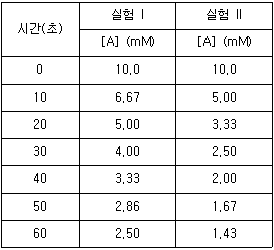
실험 I에서, 반응 시간 30초일 때 C의 생성속도(mmolL-1s-1)는? (단, 온도는 일정하다. 1mM= 10-3M 이고 1mmol= 10-3 mol 이다.)- 1.0×10-2
- 2.0×10-2
- 4.0×10-2
- 8.0×10-2
- 1.0×10-1
(정답률: 알수없음)
19. 다음에서 옳은 것만을 ＜보기＞에서 있는 대로 고른 것은?
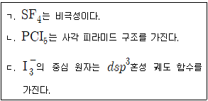
- ㄱ
- ㄷ
- ㄱ, ㄴ
- ㄴ, ㄷ
- ㄱ, ㄴ, ㄷ
(정답률: 알수없음)
20. T℃에서 부피가 일정한 용기에 두 휘발성 액체 A와 B로만 구성된 혼합 용액이 기체-액체 평형을 이루고 있다. T℃의 평형 상태에서, 기체상에서 A의 몰분율은 액체상에서 A의 몰분율의 2배이다. T℃의 평형 상태에서 순수한 A의 증기압은 400 torr이고 순수한 B의 증기압은 150 torr 이다. T℃ 평형 상태에서, 액체상에서 B의 몰분율은? (단, 온도는 T℃로 일정하고, 혼합 용액은 라울의 법칙을 따른다.)
- 0.5
- 0.6
- 0.7
- 0.8
- 0.9
(정답률: 알수없음)
21. 동물세포의 생체막에 관한 설명으로 옳지 않은 것은?
- 유동모자이크 모형으로 설명된다.
- 선택적 투과성을 갖는다.
- 인지질은 친수성 머리와 소수성 꼬리로 구성된다.
- 인지질 이중층은 비대칭적 구조이다.
- 포화지방산의 ‘꺾임(kink)’은 느슨하고 유동적인 막을 만든다.
(정답률: 알수없음)
22. 리보솜에 관한 설명으로 옳은 것만을 ＜보기＞에서 있는 대로 고른 것은?
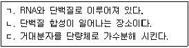
- ㄱ
- ㄴ
- ㄱ, ㄴ
- ㄱ, ㄷ
- ㄴ, ㄷ
(정답률: 알수없음)
23. 질소순환에 관한 설명으로 옳은 것은?
- 식물은 질소(N2)를 직접 흡수한다.
- 질산화(nitrification)는 질산이온(
 )을 질소(N2)로 환원시키는 과정이다.
)을 질소(N2)로 환원시키는 과정이다. - 질소고정(nitrogen fixation)은 토양의 암모늄이온(
 )을 아질산이온(
)을 아질산이온( )으로 전환시키는 과정이다.
)으로 전환시키는 과정이다. - 식물의 뿌리는 질산이온(
 )과 암모늄이온(
)과 암모늄이온( ) 형태로 흡수한다.
) 형태로 흡수한다. - 암모니아화(ammonification)는 공기중의 질소(N2)를 암모니아(NH3)와 암모늄이온(
 )으로 전환하는 과정이다.
)으로 전환하는 과정이다.
(정답률: 알수없음)
24. 교감신경계의 작용에 관한 설명으로 옳지 않은 것은?
- 기관지가 수축된다.
- ‘싸움-도피 반응(fight or flight response)’이다.
- 심장박동이 촉진된다.
- 신경절후에서 노르에피네프린이 분비된다.
- 동공이 확대된다.
(정답률: 알수없음)
25. 세균의 플라스미드(plasmid)에 관한 설명으로 옳은 것만을 ＜보기＞에서 있는 대로 고른 것은?
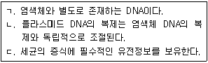
- ㄱ
- ㄴ
- ㄱ, ㄴ
- ㄴ, ㄷ
- ㄱ, ㄴ, ㄷ
(정답률: 알수없음)
26. 광합성에 관한 설명으로 옳은 것은?
- 광계 I의 반응중심 색소는 스트로마에 있다.
- 광계 II의 반응중심에 있는 엽록소는 700nm 파장의 빛을 최대로 흡수한다.
- 틸라코이드에서 NADP+의 환원이 일어난다.
- 캘빈회로는 엽록체의 틸라코이드에서 일어난다.
- 스트로마에서 명반응 산물을 이용하여 포도당이 합성된다.
(정답률: 알수없음)
27. 세균의 유전자 발현에 관한 설명으로 옳은 것은?
- DNA복제는 보존적 방식으로 진행된다.
- mRNA의 반감기는 전핵세포의 반감기 보다 길다.
- 세포질에 RNA 중합효소 I, II，III 이 존재한다.
- 전사와 번역과정이 세포질에서 일어난다.
- mRNA의 3'-말단에 poly A 꼬리가 첨가된다.
(정답률: 알수없음)
28. 겔 전기영동(gel electrophoresis)에 의한 DNA 절편의 분리에 관한 설명으로 옳은 것만을 ＜보기＞에서 있는 대로 고른 것은?
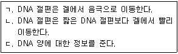
- ㄱ
- ㄴ
- ㄷ
- ㄱ, ㄴ
- ㄱ, ㄷ
(정답률: 알수없음)
29. 동물의 적응면역 (acquired immunity)에 관한 설명으로 옳은 것은?
- 항체 IgG는 5량체를 형성한다.
- T세포는 체액성 면역반응이다.
- B세포는 감염된 세포를 죽인다.
- 항원제시세포는 I 형 및 II형 MHC 분자를 모두 가지고 있다.
- T세포는 항체를 분비한다.
(정답률: 알수없음)
30. 세균의 세포벽에 관한 설명으로 옳은 것만을 ＜보기＞에서 있는 대로 고른 것은?
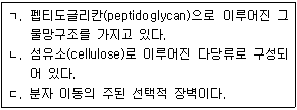
- ㄱ
- ㄴ
- ㄷ
- ㄱ, ㄴ
- ㄴ, ㄷ
(정답률: 알수없음)
31. 판의 경계 중에서 발산 경계에 관한 설명으로 옳지 않은 것은?
- 해령에서는 맨틀물질이 상승하여 새로운 해양판을 만든다.
- 해령에서는 V자형 열곡이 발달한다.
- 육지에도 발산 경계가 분포한다.
- 해령에서는 지각 열류량이 주변 해저에 비해 높다.
- 산안드레아스 단층은 발산 경계 중 하나이다.
(정답률: 알수없음)
32. 지구의 내부 구조와 구성 물질에 관한 설명으로 옳은 것만을 ＜보기＞에서 있는대로 고른 것은?
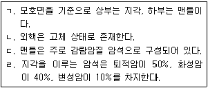
- ㄱ
- ㄴ
- ㄱ, ㄷ
- ㄱ, ㄴ, ㄷ
- ㄴ, ㄷ, ㄹ
(정답률: 알수없음)
33. 규산염 광물만을 ＜보기＞에서 있는 대로 고른 것은?
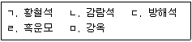
- ㄱ, ㄴ
- ㄱ, ㄷ
- ㄴ, ㄷ
- ㄴ, ㄹ
- ㄷ, ㄹ, ㅁ
(정답률: 알수없음)
34. 우리나라의 지질과 화석에 관한 설명으로 옳지 않은 것은?
- 석탄은 고생대 지층에서 주로 산출된다.
- 공룡 발자국은 중생대 지층에서 산출된다.
- 고생대 지층은 주로 강원도에 분포한다.
- 고생대에는 석회암층이 산출되지 않는다.
- 삼엽충은 고생대 지층에서 산출된다.
(정답률: 알수없음)
35. 성층권과 중간권에 관한 설명으로 옳지 않은 것은?
- 중간권에서는 고도가 상승할수록 온도가 감소한다.
- 중간권에서는 대류권에서와 같은 기상 현상이 일어난다.
- 성층권의 대기는 안정하여 대류 현상이 일어나지 않는다.
- 성층권에 존재하는 오존층은 태양으로부터 오는 자외선을 흡수한다.
- 대류권계면부터 일정 고도까지 온도가 거의 일정하다가 성층권계면까지 점차적으로 상승한다.
(정답률: 알수없음)
36. 다음은 A 지점에서 기온이 20℃, 이슬점이 12℃인 공기 덩어리가 산을 타고 올라가다가 B 지점부터 정상인 C 지점까지 구름을 만든 후 산을 넘어 D 지점까지 가는 모습을 나타낸 것이다. 이에 관한 설명으로 옳은 것은?
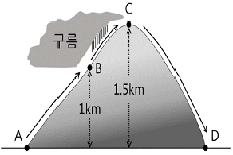
- B 지점에서는 기온이 이슬점보다 낮다.
- C 지점에서는 기온이 이슬점보다 높다.
- C 지점에서는 기온이 0℃ 아래로 떨어진다.
- D 지점에서는 A 지점보다 기온이 높다.
- D 지점에서는 이슬점이 12℃이다.
(정답률: 알수없음)
37. 해저 지형에 관한 설명으로 옳은 것은?
- 저탁류는 대륙사면에서 주로 나타난다.
- 해저 지형에서 가장 깊은 지역은 해령이다.
- 대륙붕은 심해저평원보다 깊은 곳에 위치한다.
- 우리나라의 황해에는 심해저평원이 발달되어 있다.
- 해저에서 가장 넓은 영역을 차지하는 지역은 해구이다.
(정답률: 알수없음)
38. 태양계의 행성에 관한 설명으로 옳지 않은 것은?
- 수성은 내행성이다.
- 금성에는 위성이 있다.
- 화성의 공전주기는 지구보다 길다.
- 목성은 태양계에서 질량이 가장 큰 행성이다.
- 토성은 지구보다 밀도가 작다.
(정답률: 알수없음)
39. 그림은 지구 주변을 도는 달의 공전을 나타낸 모식도이다. 이에 관한 설명으로 옳은 것은?
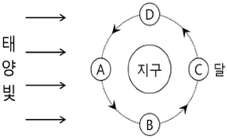
- 달이 B의 위치에 있을 때는 자정에 떠오른다.
- B에 위치한 달은 상현달이다.
- 달이 C의 위치에 있을 때는 일식이 일어난다.
- 달이 D의 위치에 있을 때는 초저녁에 관측된다.
- 달이 A에 위치하면 다른 위치보다 가장 오랜 시간 동안 관측된다.
(정답률: 알수없음)
40. 표는 별의 절대 등급과 지구에서 별까지의 거리를 나타낸 것이다. 이에 관한 설명으로 옳은 것만을 ＜보기＞에서 있는 대로 고른 것은?
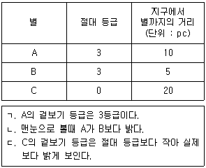
- ㄱ
- ㄱ, ㄴ
- ㄱ, ㄷ
- ㄴ, ㄷ
- ㄱ, ㄴ, ㄷ
(정답률: 알수없음)
A에 작용하는 마찰력은 F와 반대 방향으로 작용하므로, A에 작용하는 마찰력의 크기는 2/3F보다 작아진다. 따라서, A에 작용하는 마찰력이 A가 이동한 거리에 한 일의 절댓값은 (2/3F)×0.1×cos(180°) = 0.2F이다.
주어진 조건에서 A와 B의 가속도는 4m/s2이므로, F = (1+2)×4×1 = 12N이다. 따라서, A에 작용하는 마찰력이 A가 이동한 거리에 한 일의 절댓값은 0.2×12×cos(180°) = 2.4J이다.
하지만, 문제에서는 A와 B가 연결되어 있으므로, A에 작용하는 마찰력이 B에도 작용하게 된다. 따라서, A에 작용하는 마찰력이 A가 이동한 거리에 한 일의 절댓값은 2.4/3 = 0.8J이다. 따라서, 정답은 "0.8"이다.